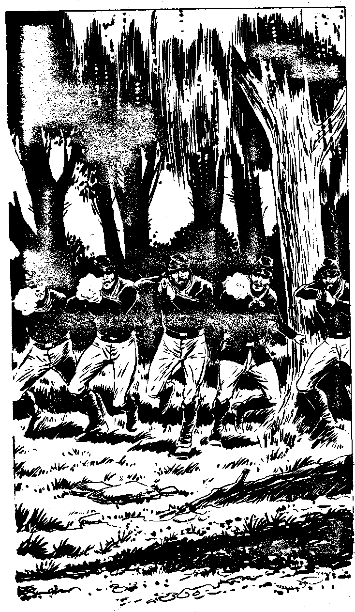

8
'Come on,' you shout and you both set off in pursuit of Yelov. He pulls away from you however, his bionic legs giving him an added advantage. Soldiers stare at you as you run past, thinking you are couriers with urgent messages. Soon you are past Benner's Hill, coming to orderly lines of Confederate men, tired but still alert. Lynx tells you this is Early's division, the Confederate troops nearest to Culp's Hill. You veer away from them, not wishing to draw any enquiries as to where you are going. You see Yelov crossing a small river or brook and disappearing into the woods around Culp's Hill, noticing that he is now in a blue uniform. You move forward towards the wood. Suddenly a line of blue jacketed infantrymen step into the open at the edge of the wood. There is a shouted command and a billowing cloud of smoke appears in front of them, they have unleashed a volley of musket fire at you. Desperately you throw yourself to the ground. Make an Evasion Roll.
| 6,7,8,9,10,11,12 | Turn to 19 |
| 2,3,4,5 | Turn to 30 |